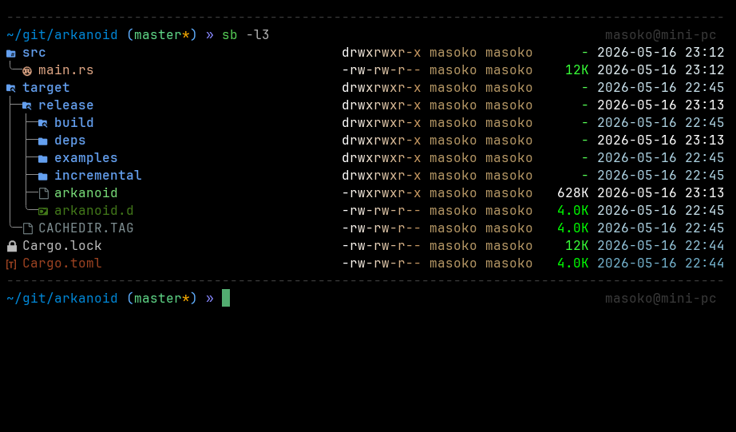

See it in action
Dual panels, previews, search, remote mounts and themes. Click any screenshot to enlarge it.
Useful outside the TUI, too
Skip the interface and print clean, aligned output you can pipe.
# List the current directory
$sb -l
# Include hidden entries
$sb -la
# Add recursive size and share columns
$sb -l --total-size
# Full tree, or two levels deep
$sb -t
$sb -l2
# Open a file in the best available viewer
$sb README.md